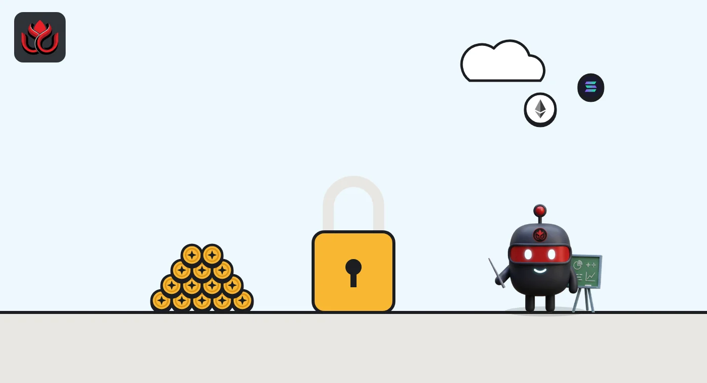
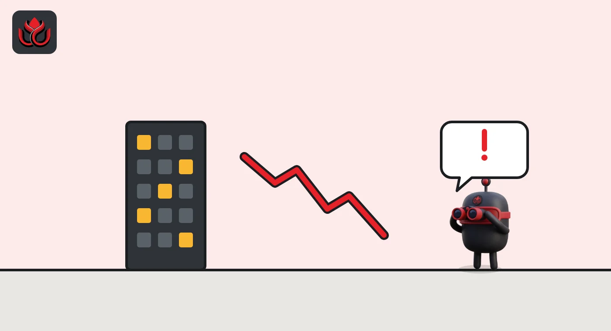

What are exchange tokens? BNB keeps burning, OKB froze its supply at 21M
Exchange tokens are coins tied to a crypto exchange that give holders perks on the platform and pay gas on the exchange's own blockchain. BNB shrinks through quarterly burns toward 100 million; OKB's supply was fixed at 21 million in 2025. Both stay tied to one company.
Key points
- Exchange tokens are issued by or closely tied to an exchange. BNB is linked to Binance and OKB to OKX.
- BNB pays gas on BNB Smart Chain and is used in Binance programs such as Launchpool and HODLer Airdrops.
- As of November 2, 2026, CoinGecko showed BNB at $703.41 with a $92.51 billion market value, and OKB at $111.97 with a $2.35 billion market value.
- BNB supply was 131.51 million after its October 19 burn, aiming for 100 million. OKB's supply is 21 million.
 What DeepSea's data shows
What DeepSea's data shows
Exchange tokens live or die with their exchanges, and DeepSea tracks both. Its Binance page shows $144.40 billion in tracked wallets, with $368.29 million of BNB flowing in and $254.31 million flowing out over seven days. OKX shows $7.91 billion in tracked wallets and a seven-day net outflow of $244.07 million.
On BNB derivatives, the perpetual futures traders DeepSea follows lean short: $2.57 million short against $1.43 million long. These figures cover the wallets DeepSea has labeled, not each exchange's full reserves.

Data: DeepSea (desea.io), checked November 2, 2026, 7:58 a.m. ET.
What is an exchange token?
An exchange token is a cryptocurrency launched by a trading platform, or closely tied to one. It usually gives holders benefits on that exchange, such as fee discounts or access to new token launches. Over time, the two largest examples, BNB and OKB, also became the gas tokens of blockchains built by their exchanges' ecosystems, so they pay network fees there.
That makes them a mix of loyalty points and network fuel. It also means their fortunes are linked to one company's health and decisions.
What is BNB used for?
- Gas on BNB Smart Chain. BNB pays transaction fees on BSC. BNB Chain says its mainnet launched on April 18, 2019. Recent upgrades such as the Jenner hard fork keep changing how block space is used.
- Binance programs. BNB can be locked in Launchpool to farm new tokens, and BNB held in Simple Earn has qualified for HODLer Airdrops of new tokens.
In those programs, BNB works like a ticket. Launchpool pays out new tokens in proportion to your share of a pool, and HODLer Airdrops look back at average BNB balances in Simple Earn. For the MOVE airdrop, Binance capped any single user at 4% of the total average BNB holding. The more BNB others commit, the smaller each holder's slice.
BNB Chain stresses that its burn runs on chain and independently of the exchange. In practice, much of BNB's everyday use still runs through Binance products.

How does the BNB burn work?
A burn sends tokens to an address no one controls, removing them forever. BNB has two kinds:
- Quarterly auto-burn. The amount comes from a formula tied to BNB's price and the number of blocks BSC produced that quarter. BNB Chain says the goal is to gradually cut total supply to 100,000,000 BNB, and that the burn is independent of the Binance exchange.
- Real-time burn (BEP-95). Part of the gas fees in every BSC block is burned, at a ratio set by validator governance.
The 37th auto-burn on October 19, 2026, destroyed 1,646,196.44 BNB, worth about $1.197 billion at the time, and left total supply at 131,512,085 BNB. The 36th burn in July removed 1,615,827.80 BNB.
The coin count per burn has been steady this year, while the dollar value swung with the price:
What is OKB and why is its supply fixed at 21 million?
OKB is OKX's exchange token. CoinGecko lists its circulating, total and maximum supply at 21 million OKB as of November 2, 2026.
According to CoinMarketCap's OKB page, OKX burned 65,256,712.097 OKB on August 18, 2025, from past buybacks and treasury reserves, and a contract upgrade then capped supply at 21 million by disabling minting and burning. The same page describes OKB as the gas token of X Layer, OKX's Ethereum layer-2 network. So unlike BNB, OKB has no ongoing burn: the number of tokens is set.
OKB also appears in OKX's proof of reserves, where the 49th report, posted in November 2026, showed it backed at 100%, meaning OKX holds as many OKB as customers have on the exchange.
The two tokens took opposite paths. BNB keeps shrinking a little every quarter under a formula. OKB made one very large cut, of roughly three times its current supply, and then locked the number in place. With minting and burning disabled, OKB's supply can no longer be used as a lever, in either direction.

How do BNB and OKB compare today?
As of 8 a.m. ET on November 2, 2026, according to CoinGecko:
- BNB: $703.41, market value about $92.51 billion, ranked fourth. Circulating and total supply 131.511 million; maximum supply 200 million. All-time high $1,369.99.
- OKB: $111.97, market value about $2.35 billion, ranked 44th. Supply 21 million. All-time high $228.74.
Both trade at about half of their all-time highs, by our arithmetic from those figures.
Price per token says little on its own. BNB has about 6.3 times as many tokens as OKB, so market value, price times supply, is the fairer comparison. On that measure BNB is close to 40 times larger, by our arithmetic from CoinGecko's figures.
How much of an exchange token sits on the exchange?
A lot of an exchange token's supply can sit on the exchange itself. OKX's proof-of-reserves page showed customers holding 19,676,980 OKB in OKX accounts in its 49th report, against 19,701,877 OKB in OKX wallets. Set against CoinGecko's 21 million supply, that means roughly 94% of all OKB was held by OKX for its customers at the snapshot, by our arithmetic.
Trading activity also differs sharply. On November 2, 2026, CoinGecko showed about $797 million of BNB traded in 24 hours, against about $16 million for OKB. Thin trading can mean bigger price swings when large holders buy or sell.
What are the risks of exchange tokens?
- One-company risk. Demand depends heavily on one exchange. Ten days after BNB's October burn, Binance lost about $6.3 billion in a hack.
- Burns are not a price promise. Fewer tokens do not guarantee a higher price. BNB burned more coins in October than in July, and its price on November 2 was still below the level implied at the burn.
- Rules can change. OKB's supply model changed in 2025, and BNB Chain adjusted its burn formula after the Lorentz and Maxwell upgrades made blocks more frequent. Holders do not control those choices.
- Regional limits. Many perks, such as HODLer Airdrops, exclude users in countries including the US and UK.
None of this makes an exchange token a share in the company. Holders get product perks and a gas token, not a claim on the exchange's profits, unless a program explicitly says otherwise.
LC Insight analysis
This section is our reading of the facts above, not a statement of fact.
- Burns get too much attention. BNB's coin count per burn barely moves from quarter to quarter; the dollar headline mostly follows the price.
- The real test for any exchange token is the exchange's worst day. The Binance theft in late October is that test, live.
- OKB's fixed supply is easier to understand, but it also removes a lever. Its value now rests on demand for OKX products and X Layer.
What's next
- BNB's 38th quarterly burn, expected around January 2027.
- Usage of X Layer, the main new source of demand for OKB.
- How Binance's recovery from the October theft affects BNB.
Frequently asked questions
Is BNB the same as Binance?
No. BNB is a token. BNB Chain says the auto-burn runs on chain independently of the Binance exchange, but many uses of BNB are Binance programs.
Will BNB supply ever reach 100 million?
That is BNB Chain's stated goal. After the October 19, 2026, burn, about 31.5 million BNB remained above the target, and the formula sets no fixed end date.
Does OKX still burn OKB?
CoinMarketCap's OKB page says a 2025 contract upgrade disabled minting and burning after a final burn of about 65.26 million OKB, fixing supply at 21 million.
What is BNB's maximum supply?
CoinGecko lists 200 million BNB as maximum supply, the original figure. Total supply was 131.511 million as of November 2, 2026.
Disclaimer. This article is based on public information and the sources listed below as of the update time shown. It is for information only and is not investment, legal or tax advice. Figures may change as companies and authorities publish new data.